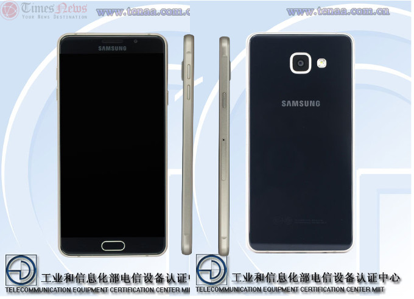
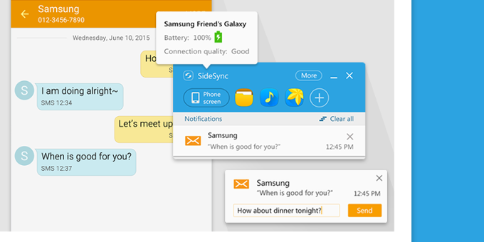
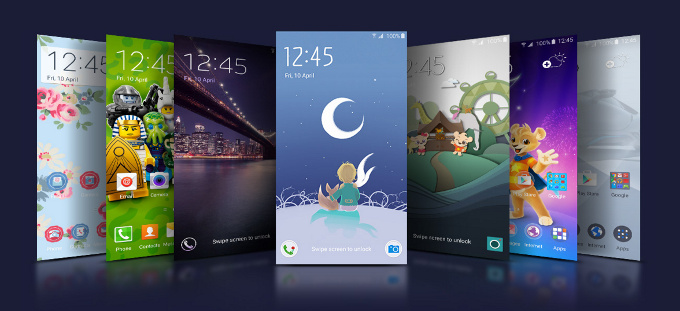

Samsung Galaxy A7 (2016) Hits The FCC With A 3300 mAh Battery, Narrower Chassis
Samsung's second batch of A-series phones may be launched very soon, if the recent barrage of leaks, tips and benchmark database slips is any indication. Most of the
2016 editions of the Galaxy A3, A5, A7 and A8 already appeared in various databases, and we even had some purported new entrants, like a
Galaxy A9, make the rumor rounds.

How To Mirror The Screen Of Your Samsung Device And Control It With PC Or Mac
This nifty functionality is brought to us by Samsung's SideSync app. Thanks to it, you can wirelessly share files between your phone and PC, mirror the screen of the
handset to your desktop computer, check out your notifications, and control your smartphone. We mentioned that you can do this wirelessly by having both of your devices
connected to one and the same Wi-Fi network, but you can also benefit from SideSync's functionality by plugging your Samsung device in your PC.

A Flurry Of Christmas Themes Arrives Early On The Samsung Theme Store
Samsung can take pride in the customization options it provides with its users: the Theme store that launched with the Galaxy A series and expanded to the
S6, Note 5 and all the latest Samsung devices is an easy way to completely transform the looks of your device. A theme will change even apps that
traditional launchers won't be able to modify: things like the dialer, for instance (but the change is more of a skin-deep visual one, rather than a functional alteration).